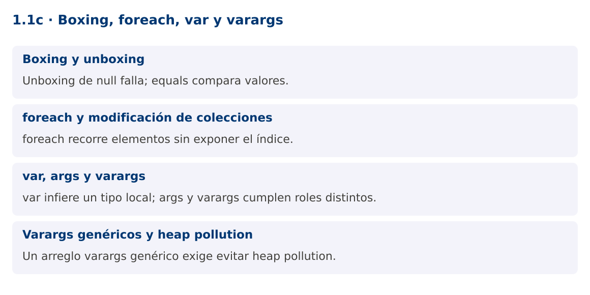

Programación Aplicada
1.1c. Boxing, foreach, var y varargs

Autor: Ing. Pablo Torres, Mgtr.
Unidad: 1. Programación genérica
Proyecto de trabajo: CampusMonitor
Inicio del curso · Presentación editable · Ver en el navegador
1. Conceptos y ejemplos
Contexto
El catálogo ya usa tipos genéricos. Ahora necesitamos cargar varias lecturas, recorrerlas y calcular un promedio. Esta operación conecta los tipos primitivos con sus envoltorios y obliga a distinguir inferencia local, argumentos de consola y cantidad variable de argumentos.
Antes de empezar
Recupera el avance de 1.1b. Conserva sus comandos y evidencias. Revisa el ejemplo completo antes de implementar la PC. Las demostraciones del material se ejecutan separadas del proyecto personal.
1.1. Boxing y unboxing
Boxing convierte un valor primitivo en una instancia de su clase envoltorio, por ejemplo int a Integer. Unboxing recupera el primitivo. El compilador inserta conversiones en asignaciones, argumentos y operaciones aritméticas. List
Con envoltorios, == puede comparar identidad de referencias. Algunas instancias se reutilizan mediante cachés y otras no, por lo que un resultado observado con un número pequeño no establece una regla general. Para comparar valores usa equals u Objects.equals si admites null. En cálculos intensivos, arreglos primitivos o streams especializados pueden evitar boxing innecesario.
Integer cantidad = 18; // boxing
int total = cantidad + 2; // unboxing
boolean mismoValor = java.util.Objects.equals(cantidad, 18);
1.2. foreach y modificación de colecciones
El foreach facilita recorrer arreglos y objetos Iterable. La variable del bucle recibe cada valor o referencia. Reasignar esa variable no reemplaza la posición original del arreglo o de la lista. Si el elemento es mutable, llamar a sus métodos sí puede modificar el objeto compartido.
No elimines elementos de un ArrayList mediante lista.remove dentro de su foreach. Sus iteradores pueden detectar modificaciones estructurales y lanzar ConcurrentModificationException, incluso sin varios hilos. Usa removeIf para eliminación por condición, o Iterator.remove cuando proceda. Si necesitas el índice o reemplazar posiciones, un for con índice comunica mejor la operación.
for (Double valor : valores) {
System.out.println(valor);
}
valores.removeIf(v -> v == null);
1.3. var, args y varargs
var permite inferir el tipo de una variable local inicializada. No significa Object, no admite inicialización con null sin tipo y no se utiliza para campos o parámetros ordinarios. Si escribes var lista = new ArrayList
String[] args es el arreglo de argumentos recibido por main. Su nombre es convencional. En cambio, T... valores declara varargs: el método admite cero o más argumentos y los recibe como un arreglo. Solo puede existir un parámetro varargs y debe ser el último. Pasar explícitamente un arreglo nulo sigue siendo posible y necesita una política de validación.
static int contar(String... ids) { return ids.length; }
var n = contar("S01", "S02");
// main(String[] args) recibe textos desde la consola.
1.4. Varargs genéricos y heap pollution
Los arreglos comprueban su tipo de componente en ejecución, mientras los genéricos emplean borrado. Mezclarlos puede introducir contaminación del heap: una variable parametrizada contiene un objeto incompatible debido a operaciones no seguras. @SafeVarargs documenta que la implementación no realiza esas operaciones, pero la anotación no corrige código inseguro.
Úsala solo en métodos o constructores permitidos y realmente seguros. En el ejemplo, el método static recorre los argumentos, valida cada elemento y copia las referencias a una lista nueva. No escribe tipos ajenos en el arreglo ni lo expone al llamador. Para una API que recibe lotes grandes o nulos frecuentes, aceptar una List
Mapa de conceptos

2. Demostración guiada
2.1. Problema y contrato
El catálogo ya usa tipos genéricos. Ahora necesitamos cargar varias lecturas, recorrerlas y calcular un promedio. Esta operación conecta los tipos primitivos con sus envoltorios y obliga a distinguir inferencia local, argumentos de consola y cantidad variable de argumentos.
La implementación siguiente es una demostración resuelta. La PC de la sección 3 requiere desarrollar una ampliación propia sobre CampusMonitor.
Archivo completo: BoxingDemo.java.
package edu.ups.pap.u01;
import java.util.*;
public class BoxingDemo {
@SafeVarargs
static <T> List<T> lote(T... valores) {
Objects.requireNonNull(valores, "Arreglo nulo");
List<T> copia = new ArrayList<>();
for (T valor : valores) copia.add(Objects.requireNonNull(valor, "Elemento nulo"));
return List.copyOf(copia);
}
static OptionalDouble promedio(List<Double> valores) {
if (valores.isEmpty()) return OptionalDouble.empty();
double suma = 0;
for (Double valor : valores) suma += Objects.requireNonNull(valor);
return OptionalDouble.of(suma / valores.size());
}
public static void main(String[] args) {
var temperaturas = lote(22.0, 24.0, 26.0);
System.out.println(promedio(temperaturas).orElseThrow());
System.out.println("Argumentos de consola: " + args.length);
System.out.println(promedio(List.of()));
try { lote(22.0, null); }
catch (NullPointerException e) { System.out.println(e.getMessage()); }
}
}
2.2. Ejecución
Desde la raíz de este repositorio, con JDK 25:
java 01/1.1-fundamentos/03-boxing-foreach-varargs/ejemplos/BoxingDemo.java
Con el proyecto Gradle de demostraciones:
cd demostraciones
./gradlew runDemo -Pdemo=1.1c
En Windows usa gradlew.bat. Ejecuta cada demostración desde una terminal nueva o vuelve a la raíz antes de cambiar de contenido.
2.3. Resultado y lectura de la ejecución
24.0
Argumentos de consola: 0
OptionalDouble.empty
Elemento nulo
- Identifica los datos iniciales y las precondiciones que la demostración valida.
- Sigue las llamadas desde
mainoloopy relaciona las operaciones con los conceptos de la sección 1. - Contrasta el resultado con la salida esperada del ejemplo. Si el orden es concurrente, compara la invariante y no el orden de impresión.
- Cambia un dato del ejemplo y predice el resultado antes de ejecutarlo. Registra cualquier diferencia y su causa.
3. PC1.1c · Práctica de clase
3.1. Ampliación del proyecto
Esta actividad se resuelve en tu repositorio icc-pap-campusmonitor-apellido. Mantén la funcionalidad anterior. No reemplaces tu solución con los archivos de demostración del material.
- Agrega un comando promedio que convierta los argumentos de consola a Double, valide valores finitos y calcule el promedio de un lote.
- Implementa una fábrica varargs de Lectura
que no exponga el arreglo recibido. Rechaza elementos nulos con un mensaje concreto. - Compara en la evidencia un foreach que reasigna su variable con una operación que reemplaza la posición de una lista. Explica los resultados.
3.2. Comprobación y evidencia
Prueba los casos de esta sección y registra entradas, salida real y explicación. Incluye una ejecución normal y un caso de error. La evidencia debe permitir repetir el resultado desde el commit entregado.
| Caso que debes revisar | Comportamiento requerido |
|---|---|
| promedio 20 22 24 | 22.0 |
| promedio sin valores | Mensaje de lote vacío, sin división por cero |
| promedio NaN o texto | Entrada rechazada |
En evidencias/PC1.1c.md agrega: cambio realizado, archivos principales, comandos de ejecución, tabla de pruebas y enlace al commit final. No añadas una rúbrica a esta PC.
3.3. Commits de la actividad
git status
git add src evidencias
git commit -m "feat(pc1.1c): boxing-foreach-var-y-varargs"
git push
git log -1 --format=%H
Ajusta las rutas de git add a los archivos que realmente creaste. Incluye también configuración o SQL si cambiaste esos archivos. El último comando muestra el hash real que debes enlazar en tu evidencia.
Lo esencial
- Unboxing de null falla; equals compara valores.
- foreach recorre elementos sin exponer el índice.
- var infiere un tipo local; args y varargs cumplen roles distintos.
- Un arreglo varargs genérico exige evitar heap pollution.